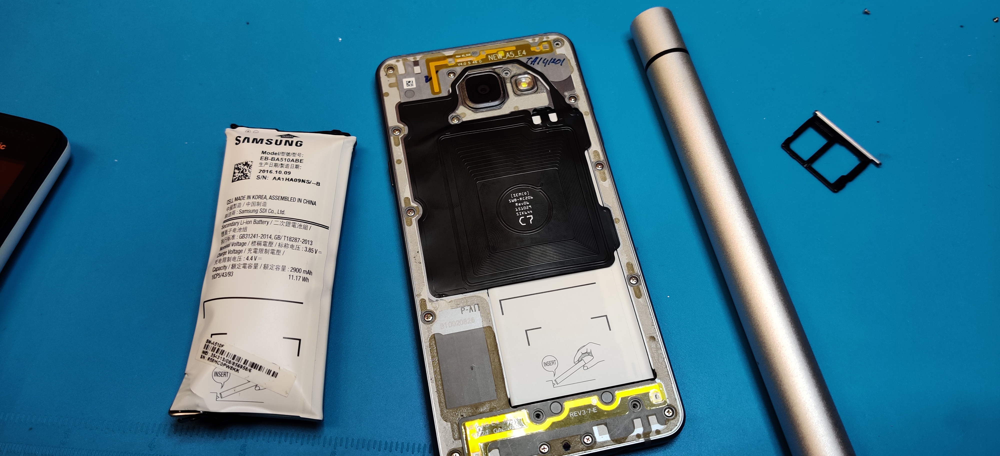
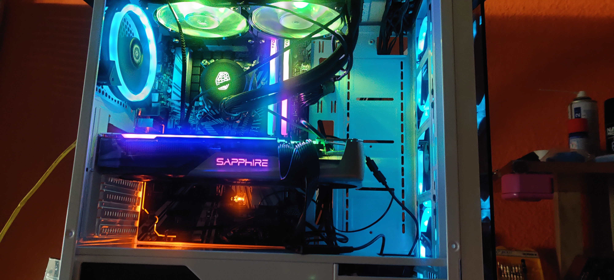
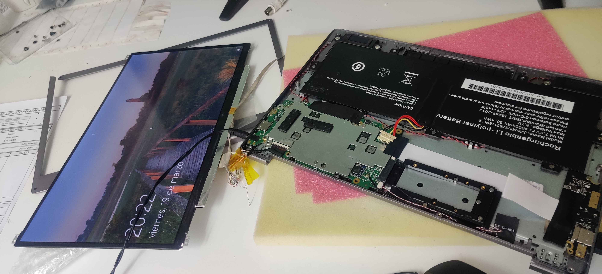
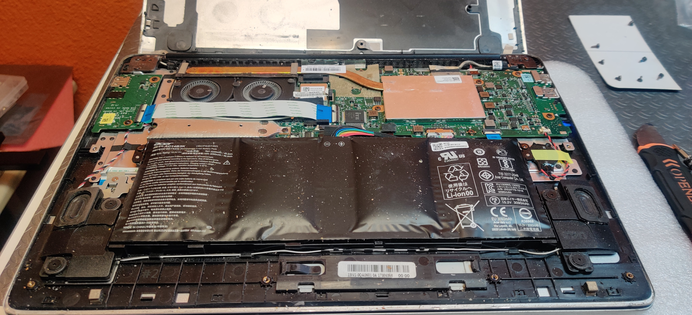
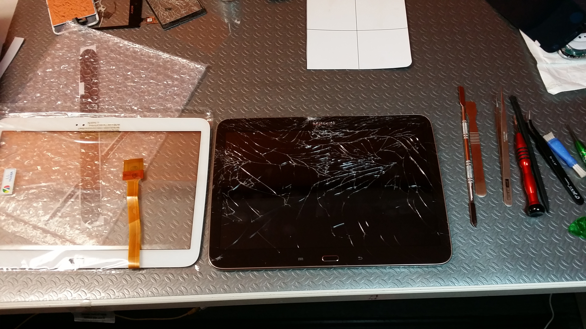

Una empresa joven con más de 18 años de experiencia al pie del cañón. Nos involucramos y empatizamos con cada cliente.

Campus PC Informática nació como una empresa joven con la vocación de dar el mejor servicio técnico posible en Salamanca. Con más de 18 años de experiencia y una tienda con más de 10 años abierta al público en la Calle Arapiles, seguimos luchando cada día por ofrecer un servicio cercano, profesional y honesto.
Que mejor servicio técnico para detectar y reparar fallos que el que compone ordenadores a medida y conoce desde el primer hasta el último componente. Tanto de hardware como de software, llevamos más de 18 años ayudando y dando el mejor soporte para que no tengas que preocuparte de nada.
Nuestras valoraciones y reseñas en Google nos avalan: 4,6 sobre 5 con 231 reseñas.
Tres pilares que guían nuestro trabajo diario en Campus PC.
Dar un servicio al cliente como nos gustaría que nos tratasen a nosotros cuando estamos al otro lado del mostrador.
Poder ayudar y solucionar los problemas que te puedan surgir en tu día a día para que puedas dedicarte a tus quehaceres sin preocuparte por esa reparación que no sabías como gestionar.
No llenar el planeta de residuos tecnológicos dando una segúnda oportunidad a ese aparato que ya no funciona. Si se puede, nosotros lo reparamos.
Un espacio preparado con las mejores herramientas de reparación y soldadura, actualizando nuestras instalaciones año tras año.



